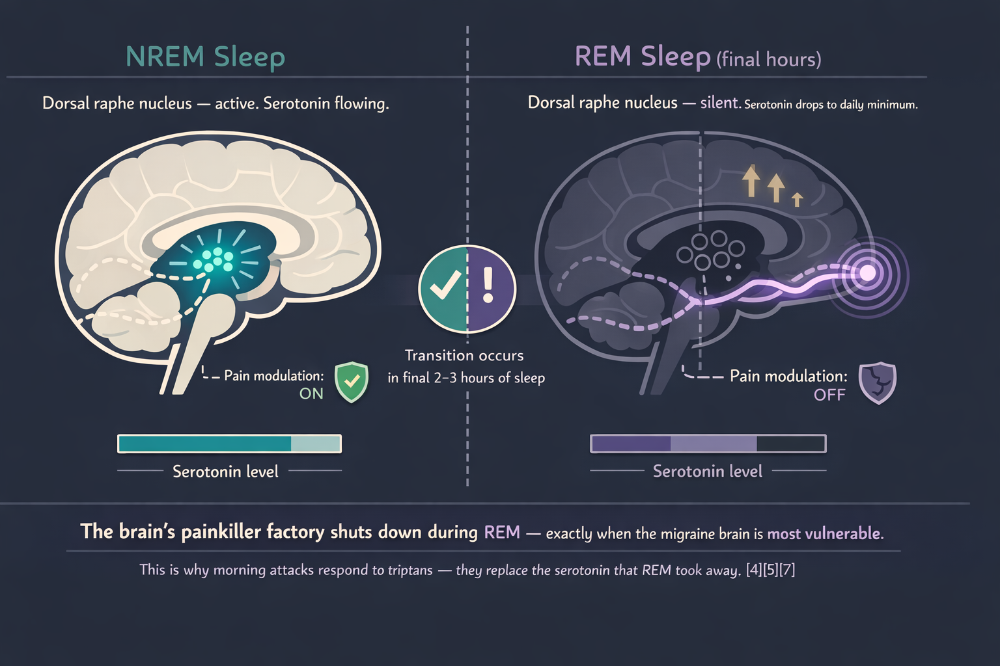
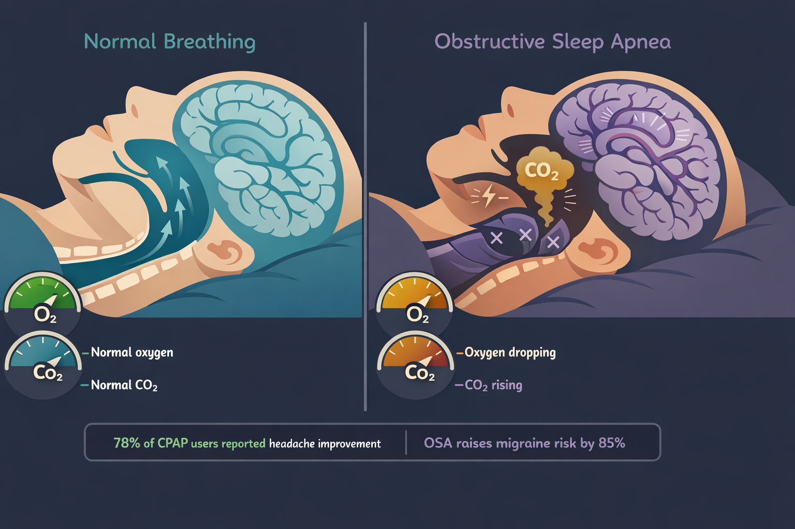
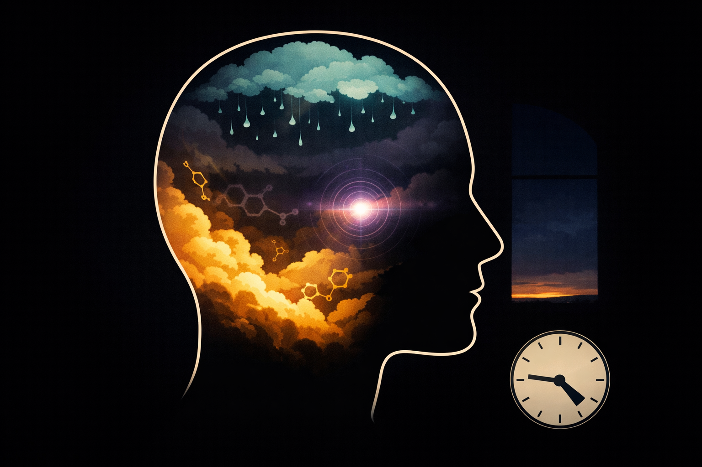

By Rustam Iuldashov
30 years lived experience with chronic migraine | Sources: 27 peer-reviewed references including Headache (n=393,728), Neurology (meta-analysis), Cephalalgia, Frontiers in Neurology, Brain, Sleep Medicine Reviews | Last updated: March 13, 2026
Medical Review: This content is based on peer-reviewed research from Headache: The Journal of Head and Face Pain, Neurology, Cephalalgia, Frontiers in Neurology, Brain, Sleep Medicine Reviews, BioMed Research International, Acta Physiologica, Journal of Clinical Neuroscience, and other authoritative sources.
Important Notice: This article is for informational purposes only and does not replace professional medical advice. Consult your doctor before changing your sleep habits, medications, or treatment plan, especially if you suspect a sleep disorder.
Key Takeaways
- 60–70% of migraine patients report attacks beginning in the morning — this is not coincidence[1]
- Morning migraines start during sleep; the prodrome happens while you are unconscious, so you miss the early treatment window[2]
- REM sleep silences the brain’s serotonin system, creating a vulnerability window in the last hours before waking[4][5]
- Obstructive sleep apnea raises migraine risk by 85% — CPAP can improve headaches in up to 78% of adherent users[8][12]
- Sleep bruxism combined with TMJ disorders substantially increases chronic migraine risk[15]
- The cortisol awakening response, falling melatonin, and lowest endorphin levels create a biological “perfect storm” between 4 and 8 a.m.[18][19][20]
- Overnight dehydration and medication gaps quietly stack risk while you sleep[23][26]
- A four-week morning headache diary can expose which suspects are responsible in your case
The alarm hasn’t gone off. You aren’t awake — not quite — but you already know. Pressure behind the right eye. Nausea sitting low in the stomach. The room too bright through closed eyelids. By the time you open them, the migraine is fully formed. It didn’t just arrive. It was building for hours while you slept, and you couldn’t fight back.
Between 60 and 70 percent of people living with migraine report that their attacks begin in the morning.[1] Not the afternoon. Not the evening. The morning — when the brain is supposed to be at its most rested. This is the cruelest trick of the migraine brain: the hours you spend sleeping, which should be healing you, are often the hours when the attack is under construction.
Most advice says “fix your sleep.” But if you wake with a migraine three mornings a week, you are dealing with something more specific than sleep hygiene. The morning attack is a crime scene. The question is which suspect — and often more than one — committed the act while you were unconscious.
The Invisible Prodrome
The most important reframe for anyone who wakes up in full-blown pain comes from Dr. Christopher Gottschalk, director of headache medicine at Yale: morning migraine is not a different disease. It is the same migraine — except you missed the prodrome because you were asleep.[2]
When an attack starts during waking hours, you catch the cues. Food cravings. Neck stiffness. Irritability. Light sensitivity. Brain fog. These prodromal symptoms can surface twelve to twenty-four hours before the headache phase.[3] But when prodrome begins at midnight, you experience none of it consciously. You wake only when the attack has reached full force — and you have already lost the window in which early treatment works best.
This is why Gottschalk recommends non-oral treatments for morning attacks. An oral triptan may take an hour to absorb. By morning, the migraine is entrenched. Injectable or nasal formulations reach peak concentration faster and at higher levels — making them the tool of choice when you are already behind.[2]
The migraine didn’t start when you opened your eyes. It started hours ago. You just weren’t awake to see it coming.
Suspect #1: The REM Vulnerability Window
The most dangerous phase of sleep for the migraine brain is REM — and it fills the last third of the night.
During REM, the dorsal raphe nucleus — the brain’s primary serotonin factory — goes silent.[4] Serotonin, the neurotransmitter that modulates pain and is the target of every triptan, falls to its lowest point of the 24-hour cycle.[5] At the same time, cerebral glucose metabolism rises. The sleeping brain burns more energy during REM than it does when you are awake.[6]
A polysomnographic study by Dexter found that mornings following nights of increased REM and deep slow-wave sleep were associated with more waking headaches.[7] The finding sounds wrong — more deep sleep should mean better recovery. But for the migraine brain, REM is a double-edged sword. Serotonin drops. Metabolic demand spikes. Airways collapse more easily. Respiratory drive weakens. All four converge in the final hours before dawn.
Patients notice the serotonin connection intuitively: their morning attacks respond to triptans, which are serotonin receptor agonists. The drug replaces what REM took away.

Suspect #2: Breathing That Stops in the Dark
Obstructive sleep apnea — the repeated collapse of the airway during sleep, choking off oxygen for seconds or minutes — is one of the strongest treatable predictors of morning headache.
The numbers are striking. A 2025 US cohort study of nearly 400,000 people found that patients with OSA had an 85 percent higher risk of developing migraine compared to matched controls (HR 1.85, 95% CI 1.79–1.90).[8] The CaMEO study — 12,810 American migraine patients — found that 37 percent were classified “high-risk” for sleep apnea. Among those with chronic migraine, the proportion reached 51.8 percent.[9] A systematic review calculated the pooled prevalence of all headaches in OSA at 33 percent, with morning headache the most common subtype.[10]
The mechanism is direct. When breathing stops, blood oxygen drops and carbon dioxide rises. Carbon dioxide is a potent cerebral vasodilator — it swells blood vessels in the brain.[11] Each apnea episode triggers a micro-arousal, fragmenting sleep architecture, preventing the sustained deep sleep the brain needs for glymphatic waste clearance.
85% higher migraine risk in OSA patients (HR 1.85, n=393,728)[8]
51.8% of chronic migraine patients classified “high-risk” for sleep apnea[9]
33% pooled headache prevalence in OSA — morning headache most common[10]
78% of consistent CPAP users reported headache improvement (p = .045)[12]
The treatment is specific and effective. A retrospective analysis of headache patients with OSA found that 78 percent of consistent CPAP users reported headache improvement, versus 33 percent of those who did not use CPAP.[12] A prospective two-year study presented at the European Neurological Society found that CPAP therapy reduced migraine frequency, duration, and intensity — while increasing slow-wave sleep and improving oxygen saturation.[13]
If you snore, gasp during sleep, wake unrefreshed despite eight hours in bed, or have been told you stop breathing — a sleep study is not optional. It may be the most impactful diagnostic test you have never taken.

Suspect #3: The Jaw That Works the Night Shift
Sleep bruxism — involuntary grinding or clenching of the teeth during sleep — affects roughly 13 percent of adults.[14] Hour after hour, it overloads the masseter and temporalis muscles — the same trigeminal nerve territory that drives migraine pain.
The relationship is nuanced. A 2021 systematic review found that sleep bruxism alone may not directly trigger migraine. But when it coexists with painful temporomandibular disorders (TMDs), the risk for chronic migraine rises substantially (OR 1.97, 95% CI 1.5–2.55).[15] In children, the pattern was clearer: those with sleep bruxism were more than three times as likely to have primary headaches (OR 3.15, 95% CI 1.41–7.05).[16]
The diagnostic clue is location. If your morning pain begins in the temples, along the jaw, or behind the teeth before spreading upward — and if you notice worn enamel, jaw soreness, or indentations on your tongue — bruxism is a suspect. A polysomnography study confirmed significantly higher headache impact scores among patients with verified sleep bruxism.[17]
Treatment ranges from occlusal splints to Botox injections in the masseter muscles — the same approach neurologists already use for chronic migraine prevention. One intervention. Two conditions addressed.
A Note on the Usual Suspect That Isn’t One
The pillow. Orthopaedic contours, cervical wedges, and sleeping-position coaches are a multibillion-dollar industry built on the premise that morning head pain is a neck problem. For some tension-type headaches, alignment matters. But if the pain is migraine — pulsing, one-sided, accompanied by nausea or light sensitivity — no pillow addresses the serotonin shutdown of REM, the oxygen drops of apnea, or the trigeminal overload of bruxism. The fix is not under your head. It is inside it.
And so is the next suspect.
Suspect #4: The Hormonal Dawn
Between 4 a.m. and 8 a.m., your body runs a chemical shift change. Cortisol — the primary stress hormone — surges from its overnight low to its daily peak.[18] Melatonin drops. Endorphins and enkephalins — the body’s natural painkillers — sink to their lowest levels of the day.[19] Pain thresholds fall. Inflammatory mediators rise.
A review of clinical studies in BioMed Research International found that migraine attacks follow a consistent 24-hour cycle, with a marked increase between 6 a.m. and 10 a.m.[20] A Neurology meta-analysis confirmed that 110 of the 168 genes associated with migraine have circadian expression patterns, and that people with migraine produce significantly less melatonin than controls — with levels dropping further during attacks.[21]
For the migraine brain, the hormonal dawn is a perfect storm. Cortisol sensitizes the trigeminal system. Falling melatonin strips away an anti-inflammatory shield. The serotonin shutdown of the final REM cycle leaves the descending pain-modulation pathway at its weakest. Three protective systems fail at once.
Patients with chronic migraine show even more pronounced dysfunction. A study of CM patients found phase-delayed melatonin peaks, lower prolactin, and higher overnight cortisol compared to controls — evidence that the entire nocturnal hormone rhythm is shifted.[22]
Your body was designed to wake up gradually. The migraine brain wakes up under siege.

Suspect #5: The Slow Drain
Two quiet threats accumulate across the hours of sleep.
The first is dehydration. You exhale roughly 200–300 milliliters of water vapor overnight. You sweat. You don’t drink. By 6 a.m., ten or more hours have passed without a sip. A cross-sectional study of 256 women with migraine found a significant negative correlation between daily water intake and migraine severity, frequency, and duration (all p < 0.001).[23] One in three people with migraine identify dehydration as a trigger.[24] The probable mechanism: as extracellular fluid becomes more concentrated, osmotic changes may activate meningeal pain receptors, nudging the brain closer to its threshold.[25]
The second is medication wearing off. If you take a short-acting preventive or rescue medication in the evening, its plasma concentration peaks within two to four hours, then declines. By 3 a.m., you may have zero drug on board — a pharmacological gap the migraine brain exploits. This is also the mechanism behind medication overuse headache: the brain becomes dependent on regular dosing and experiences withdrawal when levels drop overnight.[26] Up to 80 percent of patients presenting at headache clinics with daily headache overuse acute medication.[27]
You went to sleep protected. You woke up exposed.
The Morning Detective
If you wake with migraine more than once a week, the answer is not to try harder at sleep. It is to find which suspect — often more than one — is responsible.
Track three things for four weeks. Time to bed. Time awake. Headache on waking. Add one question each morning: Did your partner report snoring or gasping? Was your jaw sore? Did you drink anything after 7 p.m.? What time was your last medication?
After four weeks, bring the data to your doctor and consider the following steps.
Your Four-Week Action Plan
Ask about a sleep study if snoring, gasping, or unrefreshing sleep is present. OSA screening is the single highest-yield step for chronic morning headache.
Ask about bruxism if jaw pain, temple tenderness, worn teeth, or tongue marks are present. A dental evaluation or polysomnography with EMG can confirm.
Consider a non-oral rescue medication — nasal or injectable triptan — for morning attacks. Oral tablets cannot compete with a migraine that has been building since 3 a.m.
Review medication timing with your doctor. A longer-acting preventive or a bedtime adjustment may close the overnight gap.
Hydrate before bed. A glass of water at 10 p.m. won’t cure migraine, but it removes one variable from a brain already running a deficit.
⚠️ When to Seek Emergency Help
A morning headache that is sudden, explosive, and unlike any headache you have ever had — sometimes described as a “thunderclap” — demands emergency evaluation. Period. No exceptions.
If you experience sudden severe headache with stiff neck, fever, confusion, seizures, double vision, weakness on one side, or loss of consciousness, call your local emergency number immediately. Do not use this article to self-diagnose. These symptoms may indicate a medical emergency unrelated to migraine.
The Alarm That Won’t Stop
I have lived with migraine for thirty years. For most of them, I accepted morning attacks as random — the cost of having a migraine brain. They were not random. They were the product of biology: circadian rhythms, breathing mechanics, muscle activity, neurotransmitter chemistry, and fluid balance converging in the final hours of sleep. Every one of these factors is diagnosable. Most are treatable.
The alarm clock is not the problem. The question is what happened in the hours before it rang.
You deserve to find out.
When to See a Doctor
You wake with headache three or more mornings per week. Your partner reports snoring, gasping, or breathing pauses during your sleep. You have jaw pain, worn teeth, or temple tenderness on waking. Your morning headaches are new, suddenly worse, or accompanied by neurological symptoms. Oral medications do not work for morning attacks. You suspect medication overuse headache — using acute treatments more than 10–15 days per month.
This article is a starting point for conversation with your doctor, not a replacement for medical care.
⚕️ Important Medical Disclaimer
This article is for informational and educational purposes only and does not constitute medical advice, diagnosis, or treatment. The author, Rustam Iuldashov, is not a licensed physician, neurologist, or healthcare professional. He is a patient advocate with 30 years of personal experience living with chronic migraine.
All clinical claims in this article are sourced from peer-reviewed research published in indexed medical journals. Study designs and sample sizes are noted where applicable.
Always consult a qualified healthcare provider for questions about your individual health, migraine treatment, or medication decisions. Do not adjust sleep apnea treatment, bruxism devices, or medication timing without professional guidance.
This content was last reviewed for accuracy on March 2026.
References
- Kim J, Cho SJ, Kim WJ, et al. “Morning headaches in habitual snorers: frequency, characteristics, predictors and impacts.” Cephalalgia, 31(7):829–836 (2011). doi:10.1177/0333102411398402. Study design: Cross-sectional. n=268. // Lee JH, et al. “Morning headaches: an in-depth review of causes, associated disorders, and management strategies.” Headache and Pain Research (2025). doi:10.3346/jkms.2025.26.e911. Study design: Review. Prevalence estimate of 60–70%.
- Gottschalk CH, cited in: “S7:Ep4 — Waking Up With a Migraine Attack.” Association of Migraine Disorders Podcast. August 2025.
- Giffin NJ, Ruggiero L, Lipton RB, et al. “Premonitory symptoms in migraine: an electronic diary study.” Neurology, 60(6):935–940 (2003). doi:10.1212/01.WNL.0000052998.58526.A9. Study design: Prospective cohort. n=97.
- Lovati C, D’Amico D, Raimondi E, et al. “Non-rapid eye movement sleep parasomnias and migraine: a role of orexinergic projections.” Frontiers in Neurology, 9:95 (2018). doi:10.3389/fneur.2018.00095. Study design: Review.
- Deen M, Christensen CE, Hougaard A, et al. “Serotonergic mechanisms in the migraine brain — a systematic review.” Cephalalgia, 37(3):251–264 (2017). doi:10.1177/0333102416640501. Study design: Systematic review. n=13 studies.
- Smith MT, cited in: “What’s the Relationship Between Sleep and Headache?” MDedge Neurology. 2015.
- Dexter JD. “The Relationship Between Stage III + IV + REM Sleep and Arousals with Migraine.” Headache, 19(7):364–369 (1979). doi:10.1111/j.1526-4610.1979.hed1907364.x. Study design: Prospective polysomnographic study.
- Chen TYT, Hsieh TYJ, Wang YH, et al. “Association between obstructive sleep apnea and migraine: A United States population-based cohort study.” Headache, 65(4):608–618 (2025). doi:10.1111/head.14904. Study design: Retrospective cohort. n=393,728.
- Buse DC, Rains JC, Pavlovic JM, et al. “Sleep disorders among people with migraine: results from the Chronic Migraine Epidemiology and Outcomes (CaMEO) study.” Headache, 59(1):32–45 (2019). doi:10.1111/head.13435. Study design: Longitudinal cross-sectional survey. n=12,810.
- Błaszczyk B, Straburzyński M, Więckiewicz M, et al. “Prevalence of headaches and their relationship with obstructive sleep apnea: systematic review and meta-analysis.” Sleep Medicine Reviews, 73:101880 (2024). doi:10.1016/j.smrv.2023.101880. Study design: Systematic review / meta-analysis.
- Arngrim N, Schytz HW, Britze J, et al. “Migraine induced by hypoxia: an MRI spectroscopy and angiography study.” Brain, 139(Pt 3):723–737 (2016). doi:10.1093/brain/awv359. Study design: Experimental. n=14.
- Johnson KG, Ziemba AM, Garmany JL. “Improvement in headaches with continuous positive airway pressure for obstructive sleep apnea: a retrospective analysis.” Headache, 53(2):333–343 (2013). doi:10.1111/j.1526-4610.2012.02251.x. Study design: Retrospective chart review. n=82.
- Hidalgo H. “CPAP improves migraine burden in patients with sleep apnea.” 23rd Meeting of the European Neurological Society (ENS). Abstract O314. June 2013. Study design: Prospective study. n=41.
- Lobbezoo F, Ahlberg J, Raphael KG, et al. “International consensus on the assessment of bruxism.” Journal of Oral Rehabilitation, 45(11):837–844 (2018). doi:10.1111/joor.12663. Study design: Expert consensus.
- Gonçalves LMR, Cruz TA, da Silva AAM, et al. “Association between primary headache and bruxism: an updated systematic review.” Journal of Oral Rehabilitation, 48(11):1228–1237 (2021). doi:10.1111/joor.13232. Study design: Systematic review. n=5 studies.
- Machado E, Dal-Fabbro C, Cunali PA, Kaizer OB. “The relationship between bruxism, sleep quality, and headaches in schoolchildren.” Journal of Physical Therapy Science, 26(11):1789–1791 (2014). doi:10.1589/jpts.26.1789. Study design: Cross-sectional. n=103.
- Martynowicz H, Smardz J, Michalek-Zrabkowska M, et al. “Evaluation of relationship between sleep bruxism and Headache Impact Test-6 (HIT-6) scores: a polysomnographic study.” Frontiers in Neurology, 10:487 (2019). doi:10.3389/fneur.2019.00487. Study design: Cross-sectional. n=77.
- Fries E, Dettenborn L, Kirschbaum C. “The cortisol awakening response (CAR): facts and future directions.” International Journal of Psychophysiology, 72(1):67–73 (2009). doi:10.1016/j.ijpsycho.2008.03.014. Study design: Review.
- National Headache Foundation, cited in: “Waking Up With A Migraine: Everything You Need To Know.” HealthMatch. 2022. Endorphin/enkephalin nadir between 4:00–8:00 AM.
- Baksa D, Gecse K, Kumar S, et al. “Circadian variation of migraine attack onset: a review of clinical studies.” BioMed Research International, 2019:4616417 (2019). doi:10.1155/2019/4616417. Study design: Systematic review. n=10 studies.
- Burish MJ, Chen Z, Yoo SH. “Emerging relevance of circadian rhythms in headaches and neuropathic pain.” Acta Physiologica, 225(1):e13161 (2019). doi:10.1111/apha.13161. Study design: Review. // Burish MJ, et al. “Circadian rhythms in cluster headache and migraine.” Neurology, 100(9):e947–e957 (2023). Study design: Meta-analysis.
- Peres MF, Sanchez del Rio M, Seabra ML, et al. “Hypothalamic involvement in chronic migraine.” Journal of Neurology, Neurosurgery & Psychiatry, 71(6):747–751 (2001). doi:10.1136/jnnp.71.6.747. Study design: Case-control. n=40.
- Khorsha F, Mirzababaei A, Togha M, Mirzaei K. “Association of drinking water and migraine headache severity.” Journal of Clinical Neuroscience, 77:81–84 (2020). doi:10.1016/j.jocn.2020.05.034. Study design: Cross-sectional. n=256.
- American Migraine Foundation. “Top 10 Migraine Triggers.” Available at: americanmigrainefoundation.org. Accessed 2026.
- Blau JN. “Water deprivation: a new migraine precipitant.” Headache, 45(6):757–759 (2005). doi:10.1111/j.1526-4610.2005.05143_3.x. Study design: Survey. n=95.
- Bigal ME, Lipton RB. “Overuse of acute migraine medications and migraine chronification.” Current Pain and Headache Reports, 13(4):301–307 (2009). doi:10.1007/s11916-009-0048-3. Study design: Review.
- Westergaard ML, Hansen EH, Glümer C, et al. “Prevalence of chronic headache with and without medication overuse.” Pain, 155(10):2005–2013 (2014). doi:10.1016/j.pain.2014.07.002. Study design: Cross-sectional. n=68,518.

How We Create Content
- Peer-reviewed sources only. Headache: The Journal of Head and Face Pain, Neurology, Cephalalgia, Frontiers in Neurology, Brain, Sleep Medicine Reviews, BioMed Research International, Acta Physiologica, Journal of Clinical Neuroscience, Journal of Oral Rehabilitation, International Journal of Psychophysiology, Current Pain and Headache Reports, Pain.
- Population-scale evidence. This article references cohort studies totaling over 475,000 participants across multiple countries.
- Source transparency. All claims backed by numbered references with DOI links, study design, and sample size.
- Experience + Science. 30 years personal migraine experience combined with peer-reviewed evidence.
- Regular updates. Articles reviewed when significant new research emerges.
- No conflicts of interest. No funding from pharmaceutical companies, CPAP manufacturers, dental device companies, or supplement corporations.
Stop Guessing. Start Detecting.
Migraine Companion tracks your sleep timing, morning symptoms, and attack patterns — so you can identify which overnight suspects are driving your morning migraine and bring real data to your next doctor’s visit.
Last reviewed: March 2026
Next scheduled review: September 2026